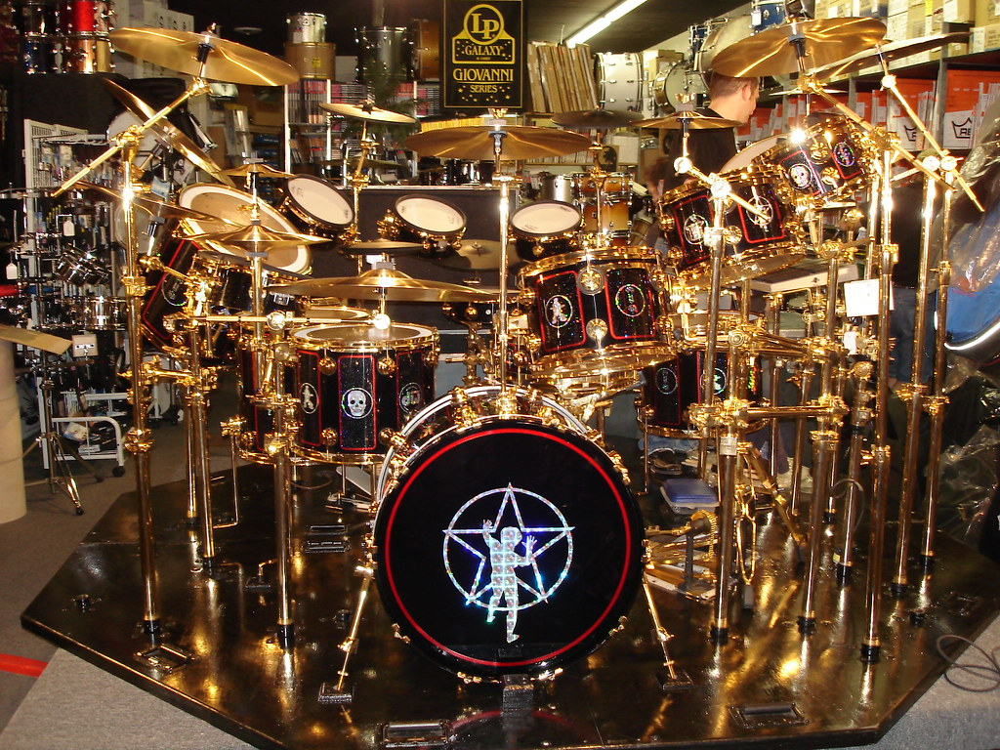
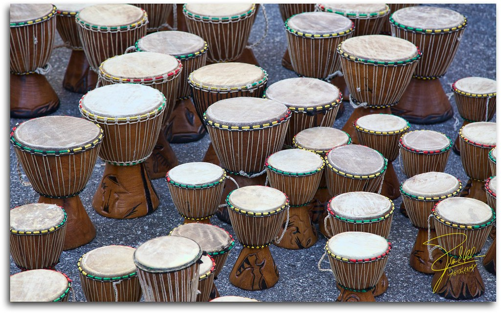

Музыка · 41-бөлім · Соқпалы аспаптар Music · Section 41 · Percussion Музыка · Раздел 41 · Ударные инструменты
🥁 Литаврлар, барабан, тарелкалар, ксилофон — соққыдан немесе шайқаудан дыбыс шығаратын аспаптардың ең көне тобы. 🥁 Timpani, drum, cymbals, xylophone — the most ancient group of instruments, sounding from a strike or a shake. 🥁 Литавры, барабан, тарелки, ксилофон — самая древняя группа инструментов: звук от удара или встряхивания.
Соқпалы (ударные) аспаптарда дыбыс соққыдан (таяқшамен, тоқпақпен, қолмен) немесе шайқаудан пайда болады. In percussion instruments sound is produced by a strike (with a stick, mallet or hand) or by shaking. У ударных инструментов звук рождается от удара (палочкой, колотушкой, рукой) или от встряхивания.
Бұл — аспаптардың ең көне тобы: алғашқы ырғақты адамдар тас пен ағашты ұрып шығарған. This is the most ancient group of instruments: the first rhythms were beaten out on stone and wood. Это самая древняя группа инструментов: первые ритмы выстукивали по камню и дереву.
Соқпалы аспаптар оркестрге ырғақ пен жарқын бояу береді. Percussion gives the orchestra its rhythm and a bright colour. Ударные дают оркестру ритм и яркую краску.
💡 Кейбір соқпалы аспаптар әуен ойнай алады, ал кейбірі тек ырғақ береді — сондықтан олар екі топқа бөлінеді. 💡 Some percussion can play a melody, while others give only rhythm — that is why they split into two groups. 💡 Одни ударные могут играть мелодию, другие задают только ритм — поэтому их делят на две группы.

🎼 Анық биіктікпен (дыбыс-биіктікті) With definite pitch (pitched) С ОПРЕДЕЛЁННОЙ ВЫСОТОЙ (звуковысотные)
Әуен ойнай алады — нақты ноталар шығарады. Can play a melody — they produce exact notes. Могут играть мелодию — дают точные ноты.
🥁 Анық биіктіксіз (шулы) Without definite pitch (unpitched) БЕЗ ОПРЕДЕЛЁННОЙ ВЫСОТЫ (шумовые)
Ырғақ береді — нақты нота шықпайды. Set the rhythm — they have no exact note. Задают ритм — точной ноты нет.
| АспапInstrumentИнструмент | СипаттамасыDescriptionОписание |
|---|---|
| ЛитаврларTimpaniЛитавры | үлкен қазандар, биіктігі бойынша қайта бапталадыlarge kettles, retuned by pitchбольшие котлы, перенастраиваются по высоте |
| Барабан, тарелкаларDrum, cymbalsБарабан, тарелки | қуат пен екпін бередіpower and accentsмощь и акценты |
| КсилофонXylophoneКсилофон | ағаш пластинкалар, сыңғырлаған әрі құрғақ үнwooden bars, a bright and dry soundдеревянные пластинки, звонкий и сухой звук |

📌 Рөлі: соқпалы аспаптар — оркестрдің ырғақтық негізі әрі жарқын бояуы. 📌 Role: percussion is the orchestra's rhythmic foundation and its bright colour. 📌 Роль: ударные — это ритмическая основа и яркая краска оркестра.